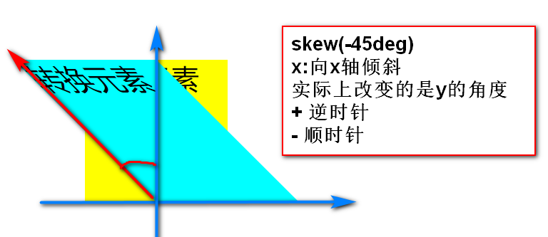
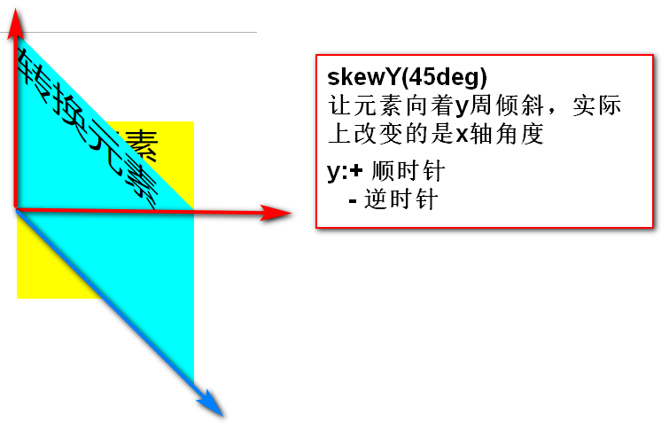
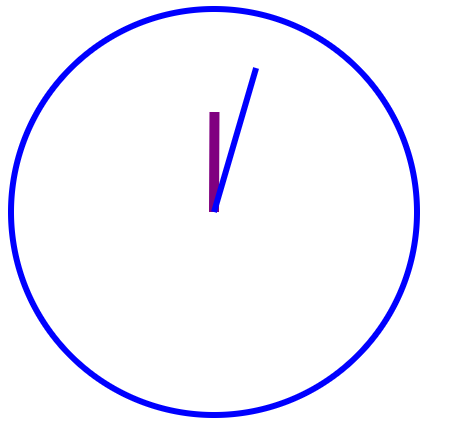

1.什么是转换 2.转化属性 transform：转换函数1 转换函数2 ........ 学习转换，就是学习在转换函数 3.转换原点 transform-origin: 取值： 1.以px为单位的数字 2.% 3.关键字 x(left/center/right) y(top/center/bottom) 取值个数： 2个值，原点在x轴和y轴上的位置 3个值，原点在x轴，y轴和z轴上的位置 默认值 center center 4.2D转换 ①位移（改变元素的位置） transform:translate(参数) 参数：1.translate(x) 等同于translateX(x) 指定元素在x轴上的位移距离 + 往右 - 往左 2.translate(x,y)指定元素在x轴和y轴上的位移距离 x: + 往右 - 往左 y:+ 往下 - 往上 3.translateX(x) 4.translateY(y) 取值：1.px为单位的数字 2.% 面试题 一个div200px*200px。使用css操作，如何在浏览器窗口不断变化的情况下，让该div永远在窗口中心显示 ②缩放(改变元素的尺寸) transform:scale(value) 取值 一个值 value > = 1 x轴和y轴都放大的倍数 0< value < 1 x轴和y轴都缩小 -1 < value < 0 x轴和y轴都缩小，并反转180度 value < = -1 x轴和y轴放大，并反转180度 两个值 scale(x，y) 分别设置x轴和y轴的放大比例 scaleX(x) 单独设置x轴 scaleY(y) 单独设置y轴 ③旋转(改变元素的角度) transform:rotate(190deg) 取值： + 顺时针旋转 - 逆时针 练习：01_ex #d1 先旋转45deg,再位移300px #d2 先位移300px，再旋转45deg 注意：旋转原点会影响效果 旋转是连同坐标轴一起旋转的，会影响旋转之后的位移方向 练习 翻滚吧，亮亮 div200px*200px,倒角50%，背景为亮亮照片 鼠标悬停时，该元素向右位移1000px，旋转1080deg ④倾斜 1.skew(x)等同于skewX(x) 让元素向着x轴发生倾斜，实际上改变的是y轴的角度 x:+ 逆时针倾斜 - 顺时针倾斜  2.skewY(y) 让元素向着y轴发生倾斜，实际上改变的是x轴的角度 y:+ x轴顺时针倾斜 - x轴逆时针倾斜  练习 02_ex 创建div 200*200 背景，鼠标悬停时 该元素向右偏移200px,向下偏移200px,旋转135deg，用x轴倾斜45deng，放大1.5倍 5.3D转换---3d都是模拟 ①透视距离 模拟人的眼睛到3D转换元素之间的距离，透视距离不同，看到的效果不同 设置透视距离 perspective:距离，此属性要加载到3d转换元素的父元素上 ②3D旋转 属性：transform 取值：1.rotateX(xdeg) 以x轴为中心轴旋转，烤羊腿 老式爆米花机 2.rotateY(ydeg) 以y轴为中心轴旋转，旋转门，旋转木马，钢管舞 3.rotateZ(zdeg) 以z轴为中心轴旋转,风扇，风车，摩天轮 4.rotate3D(x,y,z,ndeg) x,y,z取值0，代表这条轴不参与旋转 取值>0, 表示该轴参与旋转
1.什么是过渡 让css属性的值，在一段时间内平缓变化的效果 哪些css属性，可以过渡 怎么设置一段时间是多少 变化速度 2.语法 ①指定过渡的属性 transition-property 取值：直接写css的属性，多个属性值之间用空格分开 all 所有支持过渡的属性，都参与此次过渡效果 哪些属性支持过渡 1.颜色属性 2.大多数取值为具体的数字的属性 3.阴影 4.转换transform 5.visibility ②指定过渡时长 transition-duration 指定用多长时间完成此次过渡操作 取值 ：s/ms为单位的数字 1s=1000ms ③过渡时间曲线函数 transition-timing-function: 取值 1.ease 默认值，慢速开始，中间变快，慢速结束 2.linear 匀速 3.ease-in 慢慢开始，快速结束 4.ease-out 快速开始，慢慢结束 5.ease-in-out 慢速开始，慢速结束，中间先加速后减速 ④过渡的延迟时间 transition-delay: 让过渡效果，延迟多少时间执行 取值 s/ms为单位的数字 ⑤过渡代码的编写位置 原始选择器中，过渡效果有去有回 :hover中，过渡效果有去无回 ⑥简写方式 transition：property duration timing-function delay; 最简方式 transition:duration; 练习： 1.翻滚吧，亮亮 2.亮亮转圈圈 03_ex 一个div,向右移动800px.并且旋转1080deg 14:58~15:13休息
1.什么是动画
元素从一种样式逐渐变为另一种样式
其实就是多个过渡效果放到一起
2.使用关键帧来控制动画的每一个状态
关键帧
1.动画执行的时间点
2.在这个时间点上的样式
3.使用动画
①使用关键帧定义动画
@keyframes 动画名称{
/*关键帧*/
0%{样式}
...
50%{样式}
..
100%{样式}
}
ex:
@keyframes liangjump{
0%{transform:translate(0px,0px);}
20%{transform:translate(0px,200px);}
40%{transform:translate(0px,0px);}
60%{transform:translate(0px,150px);}
80%{transform:translate(0px,0px);}
100%{transform:translate(0px,110px);}
}
②调用动画
1.调用动画名称
animation-name:动画名称
2.设置动画执行时间
animation-duration: s/ms
3.设置动画的时间曲线函数
animation-timing-function
4.设置动画延迟播放
animation-delay:2s;
练习
05_ex
div#d1
创建一个动画change
0% 背景色为蓝色，矩形
25% 背景色为黄色，圆形
50% 背景色为红色，矩形
75% 背景色为orange,圆形
100% pink 矩形
③动画的其它属性
设置动画的播放次数
animation-iteration-count:
取值 1.具体次数，无单位数字
2. infinite 无限
设置动画的播放顺序
animation-direction:
取值：1.normal 默认 0%~100%
2.reverse 100%~0%
3.alternate 轮流播放，第一遍正向，第二遍逆向，...
动画的简写方式
animation：name duration timing-function delay count direction
最简方式 animation:name duration;
设置动画，播放前后的状态
animation-fill-mode
取值：1.backwards，动画播放之前的延迟时间内，显示第一帧
2.forwards，动画播放完成，保存在最后一帧
3.both,同时使用backwards和forwards
4.none 默认值，不填充
设置动画的播放状态
animation-play-state
取值：1.paused 暂停
2.running 播放
5.动画的兼容性
如果要兼容低版本浏览器，需要在动画声明的时候加前缀
@keyframes 动画名称{}
@-webkit-keyframes 动画名称{}
@-o-keyframes 动画名称{}
@-moz-keyframes 动画名称{}
@-ms-keyframes 动画名称{}
6.开发中使用的动画样式
使用animate.css中预定义好动画
1.CSS优化的目的 1.减少服务器压力 2.提升用户体验 2.CSS优化原则 尽量减少http的请求个数 .css .js .jpg 在页面顶部，引入css文件 将css和js文件放到外部独立的文件中 3.CSS代码优化 1.合并样式（能简写，就不分开写.能写群组，就不单写） 2.缩小样式文件的大小（能重用的样式，尽量重用） 3.减少样式重写 4.避免出现空的href和空的src 5.选择更优的样式属性 6.代码压缩
作业：1使用动画完成时钟  作业2：弹性布局完成 作业3：webstorm10 保证可以使用